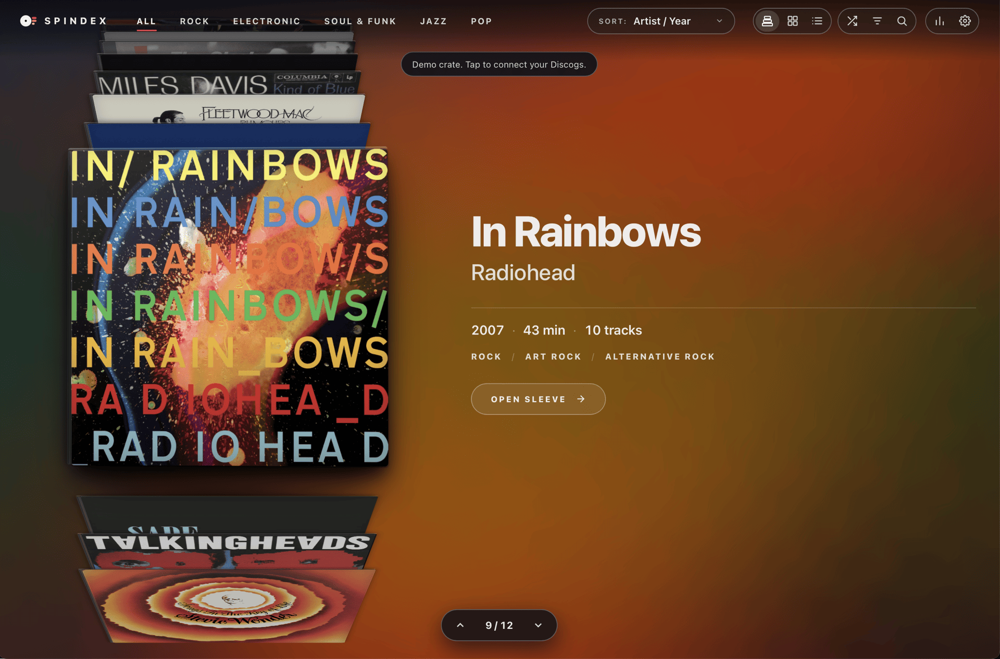
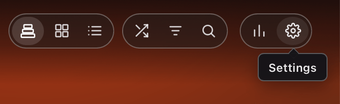
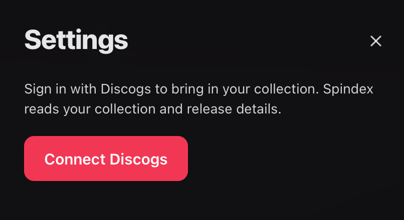
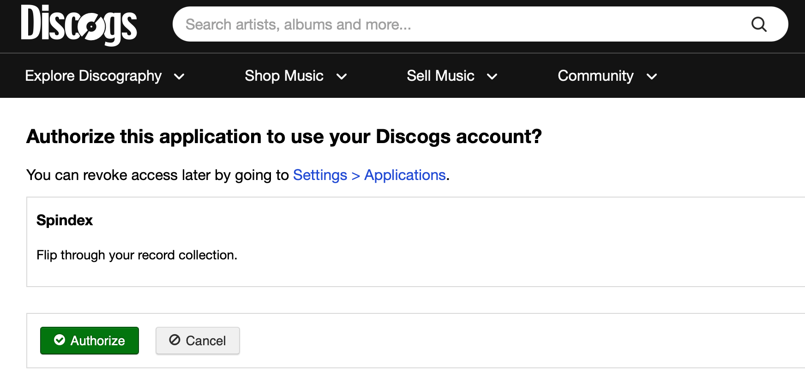

Getting Started with Spindex
Spindex lets you browse your record collection as a virtual crate. Simply connect via Discogs to get started.
Records save in your browser local storage for offline browsing on desktop, tablet, and mobile devices.
The Demo Crate
When you first launch Spindex, you can explore a demo collection to get a feel for how it works. You can flip through records in Stack, Grid, or List view, open gatefold sleeves to inspect tracklists, explore credits, and view lyrics.
A banner at the top of the crate indicates when demo data is active. Click the banner to open Settings and connect your collection.

Connecting Your Discogs Account
Connect your account to import your collection:
-
Click the gear icon in the top header to open Settings.

The gear icon in the top header. - Under the Discogs section, click Connect Discogs.
- You will be directed to Discogs to authorize read-only access to your collection.
- Once you authorize access, your collection will begin importing automatically.


Spindex reads only your collection releases, master details, and artist credits. Your login credentials remain secure and are never shared.
Checking for New Records
Spindex syncs on demand rather than running background processes:
Whenever you add new vinyl to your Discogs collection or scan barcodes to catalog new arrivals:
- Open Settings.
- Click Check now.
- Spindex looks for releases added since your last check and adds them to your crate.
The settings panel displays a timestamp indicating the last time your collection was checked.
Offline Browsing
Once your collection loads, the record details, artwork references, and tracklists reside in your browser's local database.
You can bookmark Spindex, install it to your home screen or dock as a progressive web application, and flip through your crate on a flight or in locations without an active internet connection.